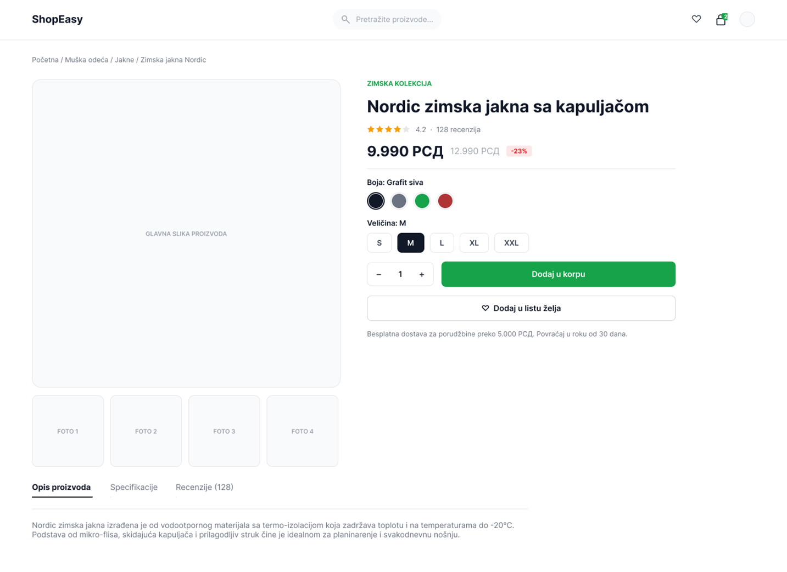
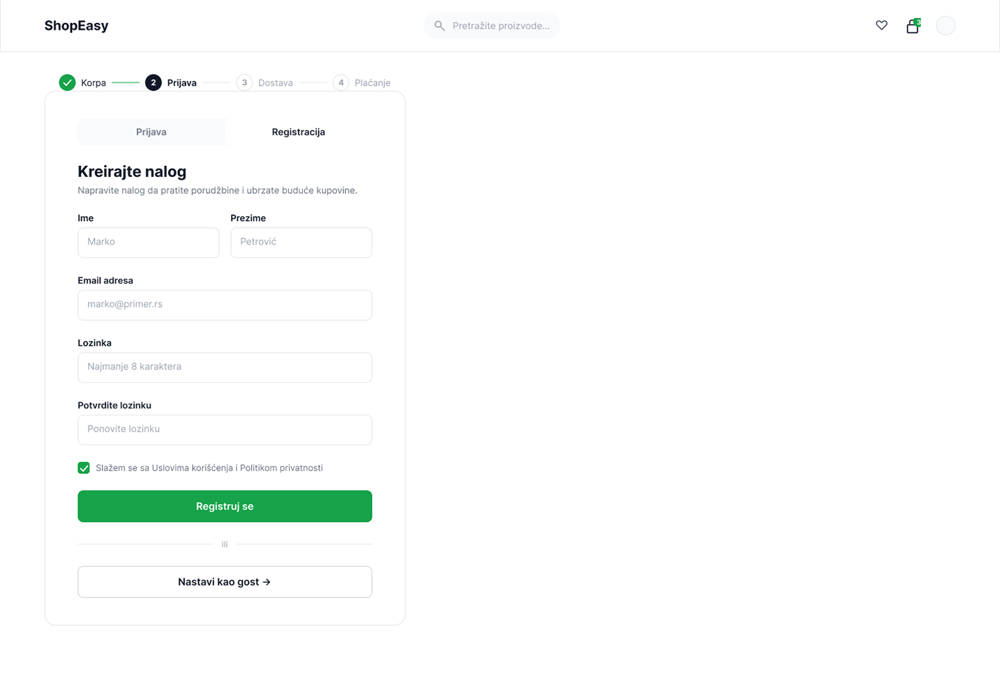
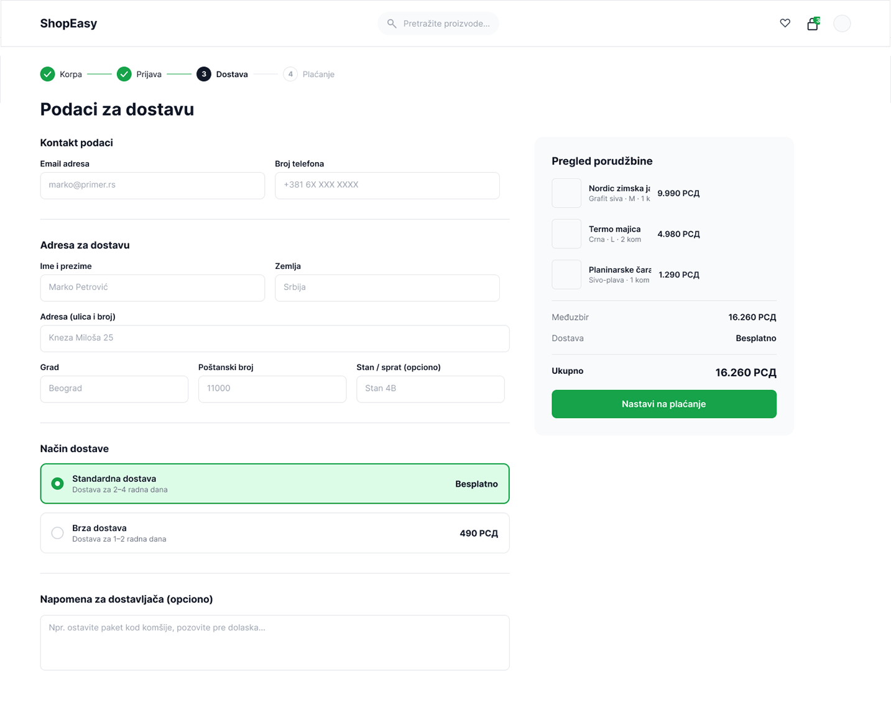

Korak po korak kroz jedan od najosetljivijih momenata na svakom prodajnom sajtu od stranice proizvoda do potvrde da je stavka u korpi.



Dodavanje proizvoda u korpu deluje kao sitan detalj, ali je zapravo trenutak u kom kupac donosi odluku da kupi. Zadatak je bio da se taj tok razloži na jasne korake: pregled proizvoda, izbor varijante (boja, veličina, količina) i potvrda da je stavka uspešno dodata, bez nepotrebnih prepreka ili nejasnih stanja.
Za svaki korak je definisano i šta se dešava kada nešto krene drugačije na primer kada je proizvod trenutno nedostupan u izabranoj varijanti kako bi tok ostao razumljiv u svakoj situaciji, ne samo u idealnom scenariju.